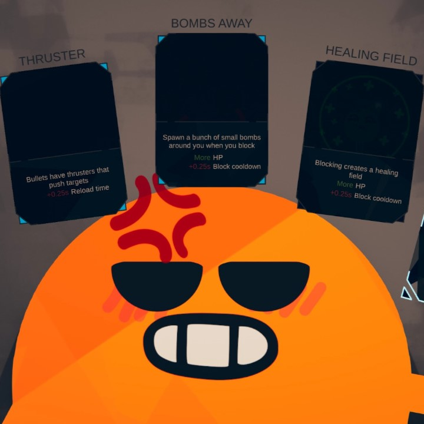
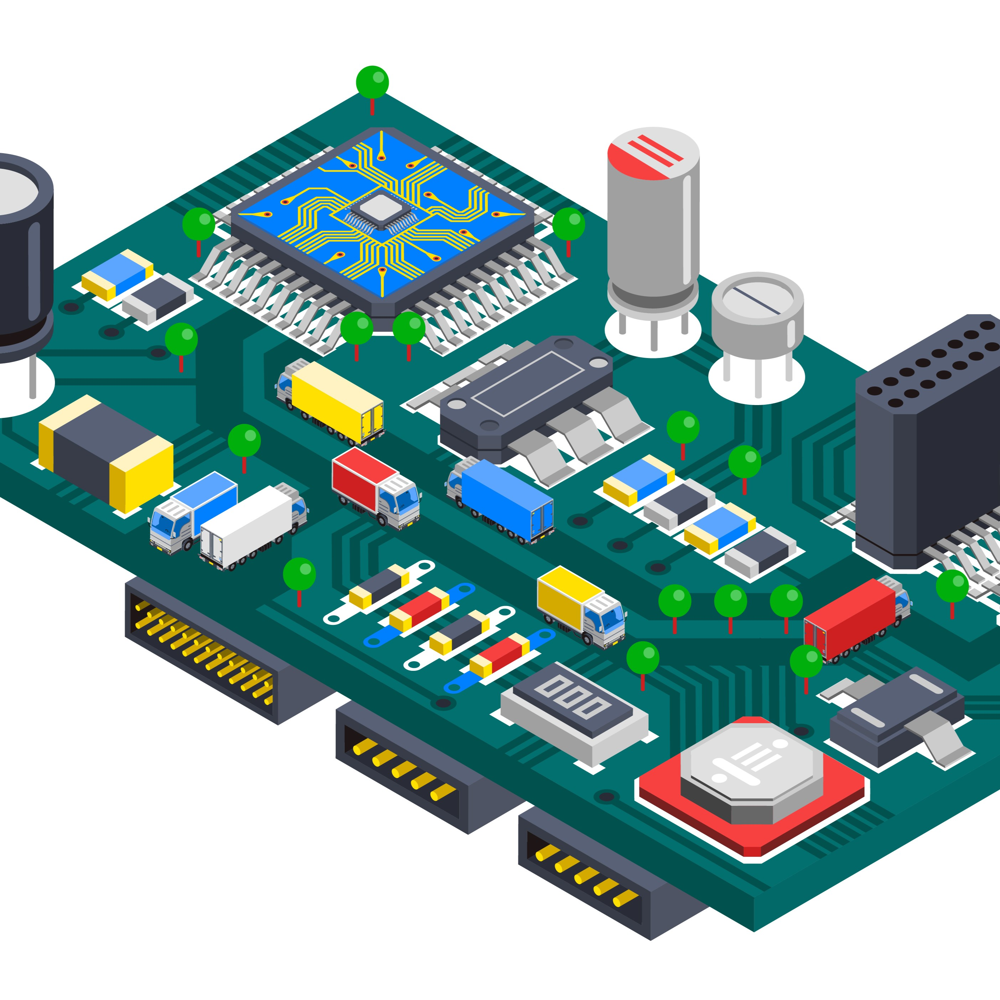

Technical Experience
Designed an automated graph, using Python, that shows the distance margins in the top 3 finishers to scale.
Make a real-time stats analysis mod for the game. Displaying dynamic stats as players upgrade there character.
Arduino Embedded Screen (Unfinished)
Make an Arduino-based LED screen that can display a modified Spotify API on the current music being played on my account.
Senior Capstone Project (Future)
Complete whatever the options are at the time of declaring a capstone group.

